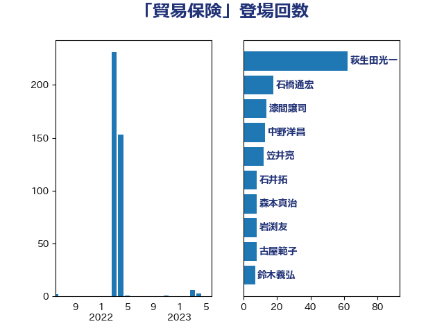

単語「貿易保険」

| 萩生田光一 | 自由民主党 | 62 回 |
| 石橋通宏 | 立憲民主党 | 18 回 |
| 漆間譲司 | 日本維新の会 | 14 回 |
| 中野洋昌 | 公明党 | 13 回 |
| 笠井亮 | 日本共産党 | 12 回 |
| 石井拓 | 自由民主党 | 8 回 |
| 森本真治 | 立憲民主党 | 8 回 |
| 岩渕友 | 日本共産党 | 8 回 |
| 古屋範子 | 公明党 | 8 回 |
| 鈴木義弘 | 国民民主党 | 7 回 |
| 落合貴之 | 立憲民主党 | 7 回 |
| 山岡達丸 | 立憲民主党 | 7 回 |
| 小野泰輔 | 日本維新の会 | 7 回 |
| 岩田和親 | 自由民主党 | 5 回 |
| 吉川ゆうみ | 自由民主党 | 5 回 |
| ながえ孝子 | 無所属 | 5 回 |
| 神津たけし | 立憲民主党 | 4 回 |
| 山崎誠 | 立憲民主党 | 4 回 |
| 中川貴元 | 自由民主党 | 4 回 |
| 細田博之 | 自由民主党 | 3 回 |
| 石井章 | 日本維新の会 | 3 回 |
| 梅谷守 | 立憲民主党 | 3 回 |
| 下条みつ | 立憲民主党 | 3 回 |
| 鎌田さゆり | 立憲民主党 | 2 回 |
| 荒井優 | 立憲民主党 | 2 回 |
| 石井正弘 | 自由民主党 | 2 回 |
| 山本博司 | 公明党 | 2 回 |
| 長峯誠 | 自由民主党 | 1 回 |
| 鈴木俊一 | 自由民主党 | 1 回 |
| 西村康稔 | 自由民主党 | 1 回 |
| 河野義博 | 公明党 | 1 回 |
| 梶山弘志 | 自由民主党 | 1 回 |
| 枝野幸男 | 立憲民主党 | 1 回 |
| 山東昭子 | 自由民主党 | 1 回 |
| 上田清司 | 国民民主党 | 1 回 |